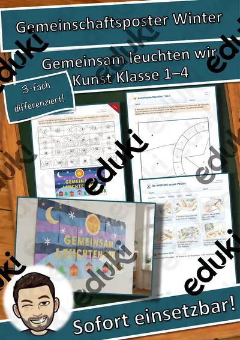
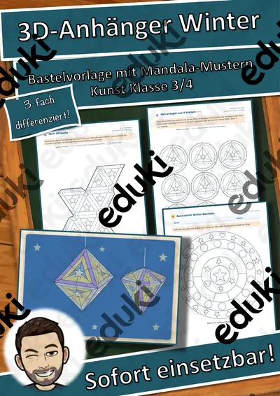

Würfelkunst Winter – Tannenbaum-Muster erwürfeln und zeichnen, 3-fach differenziert (Klasse 2–4)
Zweimal würfeln, Muster finden, Feld füllen: Bei der Würfelkunst zeigt der erste Würfel die Zeile und der zweite die Spalte meiner Mustertabelle. Das Muster kommt ins nächste Feld des Tannenbaums – von unten nach oben. So entsteht Feld für Feld ein Baum voller Linien, Wellen, Punkte und Wintermuster, und kein Baum gleicht dem anderen. Ideal für die Adventszeit, als ruhige Kunststunde oder für die Freiarbeit.
Dreifach differenziert (★/★★/★★★):
- ★ ein Würfel, 6 große Muster, Tannenbaum mit 4 breiten Feldern
- ★★ zwei Würfel, Mustertabelle mit 36 Mustern, Tannenbaum mit 7 Feldern
- ★★★ zwei Würfel, 10 schmale Felder und Pasch-Regel: eigenes Muster erfinden
Enthalten (15 Seiten):
- Hinweise für Lehrkräfte mit Ablauf (ca. 90 Minuten), Differenzierung, Kopierplan und Lehrplanbezug
- Überblick mit Musterfoto
- Spielregel in 6 Bildschritten mit Ich-kann-Leiste
- Mustertabelle 6 × 6 (36 Muster) und Mustertafel für einen Würfel
- 3 Tannenbaum-Vorlagen (★/★★/★★★)
- Würfelprotokoll mit Pasch-Regel für eigene Muster
- Lesetext „Mias Würfelbaum“ mit drei Aufgaben (richtig/falsch, Fragen beantworten, Muster beschreiben)
- Malen nach Ergebnis in 3 Stufen (bis 20, bis 100, Einmaleins) für schnelle Kinder
- Ausmalbild Winter-Mandala mit Zählaufgabe
- Lösungen
Die Vorlagen sind eigene Vektorgrafiken, die Illustrationen habe ich mit KI-Unterstützung erstellt und einzeln geprüft, das Musterfoto ist ein eigenes 3D-Rendering der Vorlagen. Viel Freude beim Würfeln und Zeichnen wünscht Snice
FachKunst
KlasseKl. 2–4
SchulformGrundschule
MaterialartArbeitsblätter, Mal- und Bastelvorlagen, Fördermaterial/Inklusion
Ähnliche Materialien

Stadt, Land, Winter: Das Wörterspiel für die Adventszeit, Klasse 2–4

Technisches Zeichnen: Lerntheke zur Kabinettprojektion: 01 Würfel und Quader Zeichnen - Übungsaufgaben inkl. Lösung

Gemeinschaftsposter Winter „Gemeinsam leuchten wir“ – Klassenposter aus 24 Teilen, 3-fach differenziert (Klasse 1–4)

Papier-Schneeflocken falten und schneiden – Winter-Bastelvorlage mit Sachtext, 3-fach differenziert (Klasse 2/3)

Ein Schlitten nach eigenem Plan – zeichnen, bauen, testen – Lesespurgeschichte mit Rätselaufgaben (Klasse 3)

Würfelsätze Winter: über 3000 Sätze würfeln und schreiben, mit Bildwürfel-Netzen in 3 Stufen (Klasse 1–3, DaZ)

3D-Anhänger Winter – Oktaeder, Diamant und Kugel zum Ausmalen und Basteln, 3-fach differenziert (Klasse 3/4)